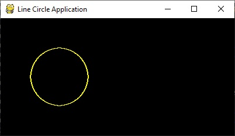

<h1>Draw Circle</h1>
<h2>New Concepts</h2>
   <table border="2px solid">
     <tr><th>Name</th><th>Description</th></tr>
     <tr><th>Circles</th><th>Circles can be drawn on the screen</th></tr>
   </table>
<h2>Code</h2>
This code will draw a circle in yellow until a mouse button is pressed.<br>
<br>
Here is what the screen looks like<br>
<br>
<hr>
<center></center>